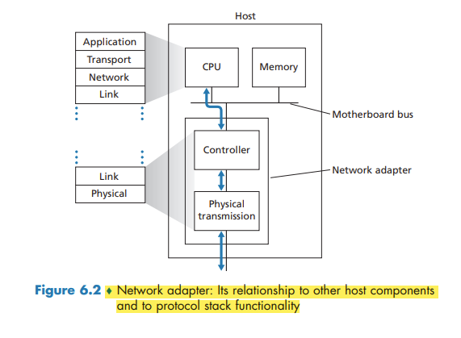

Introduction to the Link %Layer.html## Introduction to the Link Layer
The Services Provided by the Link Layer
Possible services that can be offered by a link-layer protocol include:
- Framing. A frame consists of a data field, in which the network-layer datagram is inserted, and a number of header fields. The structure of the frame is specified by the link-layer protocol.
- Link access. A medium access control (MAC) protocol specifies the rules by which a frame is transmitted onto the link, and serves to coordinate the frame transmissions of the many nodes.
- Reliable delivery.
- Error detection and correction.
Where Is the Link Layer Implemented?
For the most part, the link layer is implemented on a chip called the network adapter, also sometimes known as a network interface controller (NIC).
If the link layer performs error detection, then it is the sending controller that sets the error-detection bits in the frame header and it is the receiving controller that performs error detection.
